Smart India Hackathon 2026 · Idea submission
Problem statement SIH26099 · CPCL, Ministry of Petroleum & Natural Gas · Team Overwatch
What to put on each of the six slides, what to say, which picture goes where, and the source of every fact. Every number comes from the locked run (git tag ppt-numbers-2026-09-25); every outside fact was checked against the source linked in the References section.
| Criterion (SIH evaluation) | Where the deck answers it |
|---|---|
| Novelty · innovation | Slide 2 “Innovation and uniqueness” — specifications not spelling, standards built in, every refusal explained |
| Problem understanding | Slide 2 — real NTPC / Oil India tender lines, the SAP 40-character field, 272 CPSEs |
| Complexity · technical depth | Slide 3 — the architecture diagram, where AI is used and where rules decide |
| Feasibility · practicability | Slide 4 — a working prototype with measured numbers; risks with a strategy for each |
| Scale of impact · sustainability | Slide 5 — savings, safety, the creation gate that stops new duplicates |
| Clarity · completeness | Every slide in points; slide 6 references every source |
Criteria as published for SIH evaluation: novelty, complexity, clarity, feasibility, practicability, sustainability, scale of impact, user experience, potential for future work.
Visual: none needed — the template's title design is enough. If a picture is wanted, use photo-refinery.jpg (an Indian PSU refinery, credit on slide 6).
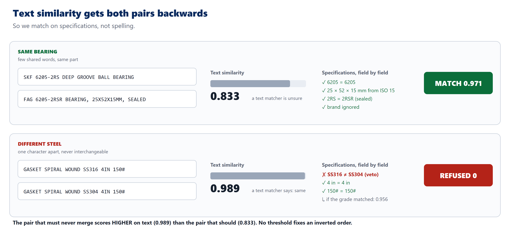
inversion.png — the core idea in one picture. Real output of our system on the demo pair.
Say — the problem (20 seconds). “India has 272 operating CPSEs. Each keeps its own material master. The same gate valve gets a different code and a different description in every company — so nobody can see that five companies buy the same item, and duplicates pile up in stores.”
Why descriptions are so messy — say it this way. “Several reasons: SAP's standard description field is still 40 characters, data came over from older systems, and above all there was never an enforced cataloguing standard — so every storekeeper invented their own shorthand.” Never blame SAP alone; a CPCL judge will know the real cause is the missing cataloguing policy.
The inversion (the line to remember). “Two records for one bearing share almost no words. Two records for different steel share almost all of them. Text matching scores the wrong pair higher. No threshold can fix an inverted order — so we changed what is measured.”
Why grade matters. “SS316 carries 2–3% molybdenum; SS304 has none. In chloride service the wrong one pits and leaks.”
Sources: 272 operating CPSEs — DPE Public Enterprises Survey 2023-24. MAKTX = 40 characters — SAP KBA 1630702. SS316 molybdenum — ASTM A240 / supplier data. Real pipe lines — Oil India tenders in the Hugging Face dataset (CC-BY-4.0). See References.
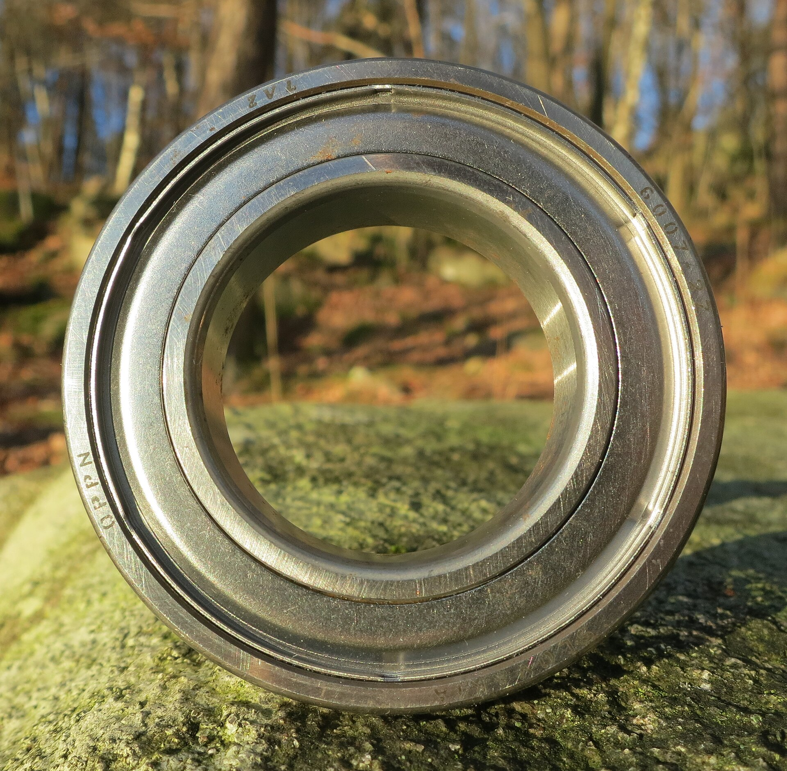
photo-ball-bearing.jpg — R. Henrik Nilsson, CC BY 4.0
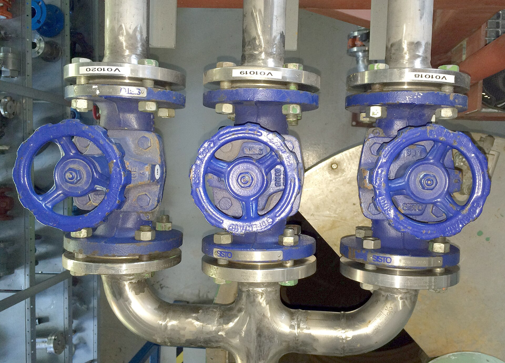
photo-gate-valves.jpg — Bitjungle, CC BY-SA 4.0
Say. “Three stages. First we read: every description becomes typed specifications, once, with the words each value came from. Then we match — with numbers only, no AI per pair, so it is cheap and every decision can be replayed. Safety fields veto a merge outright. Last, the registry: one national code, every company code kept, and a sealed log of who decided what.”
If asked “why not just use ChatGPT to match?” “An LLM per pair is millions of calls, costly, and not reproducible. We call it once per record to read, and let rules decide — so a judge, an auditor or a CPSE can check every merge.”
Be accurate about the stack: the pipeline, portal, tests and audit log are built and running; FastAPI, PostgreSQL/pgvector and Docker are the decided production stack, not yet built. Say “next phase” for those.
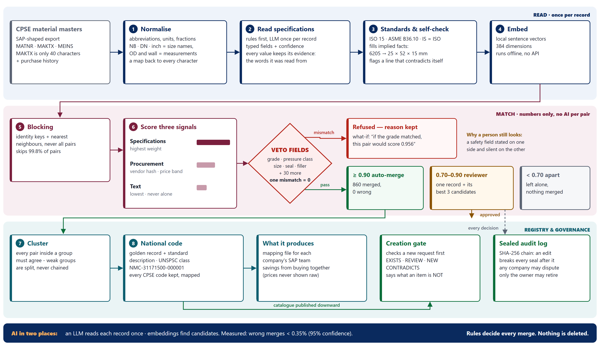
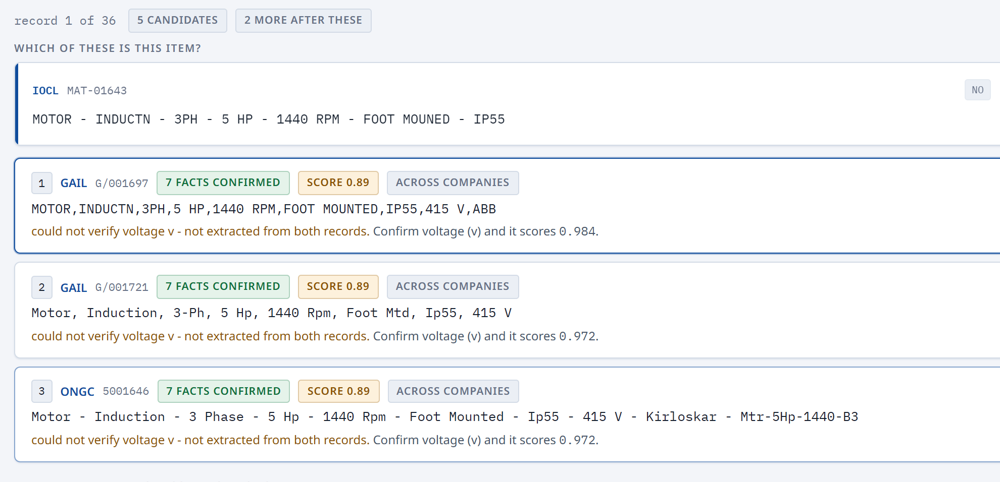
screen-review-queue.png — the reviewer sees one record and its best three candidates, ranked by how many facts agree, with the reason a person is needed and what confirming it would score.
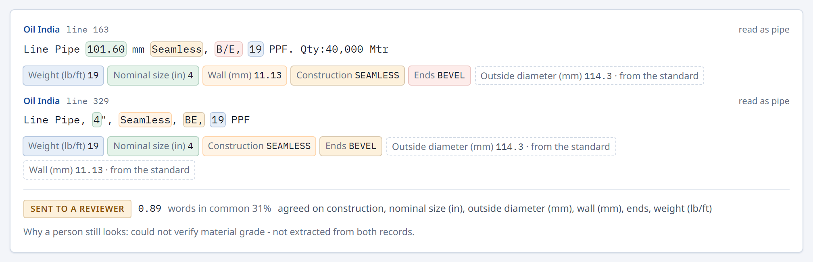
screen-real-text.png — real Oil India lines: highlighted words are where each value was read; dashed tags were filled in from a standard. “101.60 mm” and “4″” are matched through the stated weight.
Say — the honest line (it wins trust). “Our 15,000-record numbers measure how well we undo noise we generated ourselves. That is why the real tender test sits beside them. Its weak point is real: only about one in five pairs we send a reviewer is a true duplicate, because a short line fits several items. So the reviewer sees one record with its best three candidates — the right one is in the top three about four times in five.”
Numbers: data/output/evidence.json at tag ppt-numbers-2026-09-25 (see deliverables/slide-numbers.md). Error bound: Clopper & Pearson (1934). Real test labels are so far one person's (the builder's); two team members are labelling separately — say so if asked.
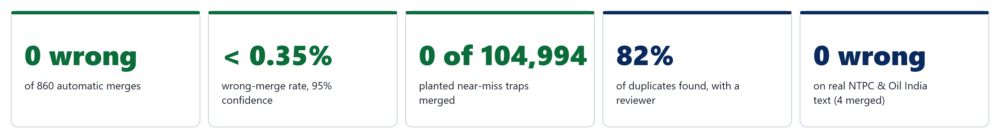
numbers.png — the headline strip for slide 4 (or type these numbers directly).
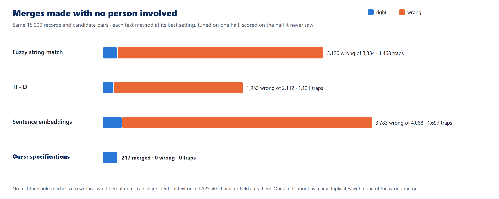
text-vs-specs.png — same 15,000 records and candidate pairs; each text method tuned on one half and scored on the half it never saw. Blue = right merges, orange = wrong.
| Method (families never used for tuning) | Merged | Wrong | Traps merged | Right |
|---|---|---|---|---|
| Fuzzy string match | 3,334 | 3,120 | 1,468 | 6% |
| TF-IDF | 2,112 | 1,953 | 1,121 | 8% |
| Sentence embeddings | 4,068 | 3,783 | 1,697 | 7% |
| Ours — specifications | 217 | 0 | 0 | all |
Say. “CPSEs bought more than ₹91,000 crore through GeM in a single quarter. When one item carries a different code in every company, none of that spend can be compared. A national code makes it comparable — that is where joint buying comes from.”
Always attribute the percentages — “published case studies report”, never “we will save 5–7%”. The ₹ figures are computed on synthetic prices: they show the method, not a forecast.
Sources: CODA Technology Solutions case study (5–7% inventory cost); EY MRO master-data case study (10% potential MRO savings, 1M+ records); GeM Q1 FY25 CPSE procurement (PSU Watch / PTI, 11 July 2024). See References.
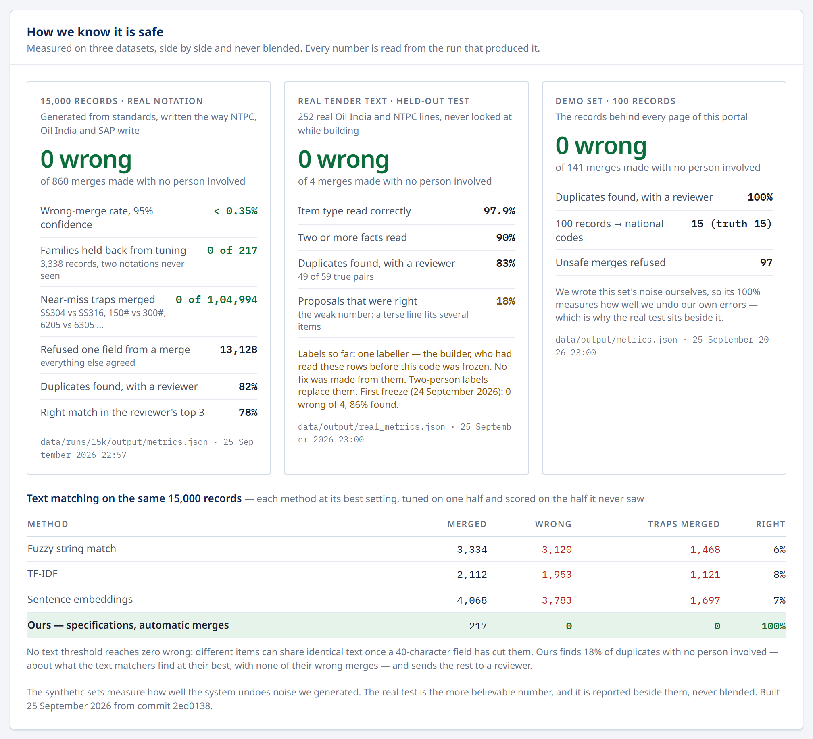
screen-evidence-panel.png — the portal's dashboard: three datasets side by side, never blended, each stamped with where its numbers came from. The weak number is shown with the strong ones.
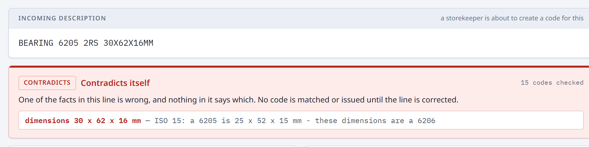
screen-gate-contradicts.png — the creation gate stops a request that contradicts itself (6205 with a 6206's size) and refuses both codes it could be confused with.
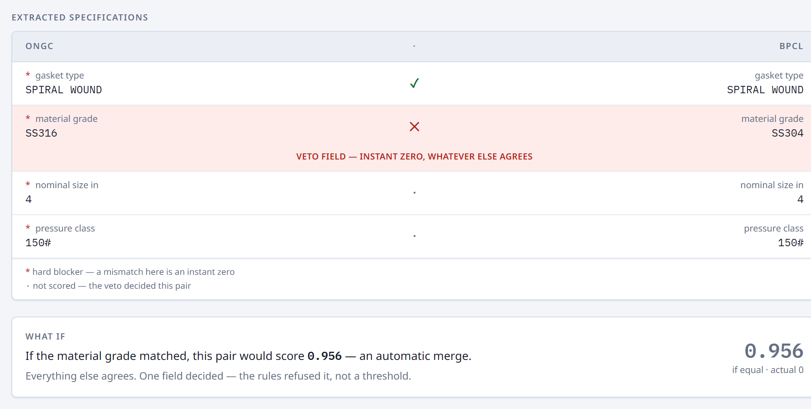
screen-block-whatif.png — one field decided: “if the material grade matched, this pair would score 0.956”.
| Fact used | Source |
|---|---|
| 272 operating CPSEs (448 reported) | Department of Public Enterprises, Public Enterprises Survey 2023-24 — dpe.gov.in |
| SAP material description MAKT-MAKTX is 40 characters | SAP KBA 1630702 — support.sap.com; sapdatasheet.org |
| CPSEs: over ₹91,000 crore on GeM in Q1 FY2024-25 | PSU Watch (PTI), 11 July 2024 — psuwatch.com |
| CPCL: IndianOil subsidiary since 2001; Manali 10.5 MMTPA | cpcl.co.in; iocl.com |
| 6205 bearing = 25 × 52 × 15 mm (ISO 15) | SKF 6205 — catalogue listing |
| 4″ SCH 40 pipe: OD 114.3 mm, wall 6.02 mm | ASME B36.10M — engineeringtoolbox.com; Nominal Pipe Size |
| IS 1367 (Part 3) identical with ISO 898-1 | BIS text (archive.org); ISO 898-1:2013 |
| IS 1364 (Part 1) identical with ISO 4014 | IS 1364-1:2002 (law.resource.org); ISO 4014 |
| ASTM A325 / A490 withdrawn 2016, now grades of F3125 | Portland Bolt — ASTM F3125; ASTM A325 |
| UNSPSC: 8 digits, 4 levels; 31171500 = Bearings | U.S. Dept of Commerce; UNSPSC |
| SS316 has 2–3% molybdenum; better pitting resistance | ASTM A240; SS316 vs SS304 valve guide |
| Record linkage theory: link / possible link / non-link | Fellegi & Sunter (1969), JASA — overview |
| Exact binomial bound (0 wrong of 860 → < 0.35%) | Clopper & Pearson (1934), Biometrika 26:404 — OUP |
| ~10% potential MRO savings; duplicates in oil & gas MRO data | EY case study — ey.com |
| ~5–7% inventory cost reduction after standardisation | CODA Technology Solutions case study — codasol.com (vendor case — always attribute) |
| Real CPSE tender text, CC-BY-4.0 | Hugging Face — Prasenjeet25/sih26099-cpse-material-codes |
| SIH evaluation criteria | SIH 2026 guide; official template's instructions slide |
| File | Use on | What it is | Credit / licence |
|---|---|---|---|
| architecture.png / .svg | Slide 3 | The full pipeline, three lanes | Ours |
| inversion.png | Slide 2 | Why text matching fails — the core idea | Ours |
| numbers.png | Slide 4 | Headline numbers strip | Ours |
| text-vs-specs.png | Slide 4 | Text matchers vs ours on the same pairs | Ours |
| screen-review-queue.png | Slide 3 | Prototype: review queue | Ours |
| screen-real-text.png | Slide 3 / 2 | Prototype: real tender text with evidence | Ours |
| screen-evidence-panel.png | Slide 5 / 4 | Prototype: dashboard evidence panel | Ours |
| screen-gate-contradicts.png | Slide 5 | Prototype: creation gate | Ours |
| screen-block-whatif.png | Slide 2 / 5 | Prototype: refused merge with its what-if | Ours |
| screen-audit-seal.png | Slide 5 (optional) | Prototype: sealed audit log and tamper test | Ours |
| photo-refinery.jpg | Slide 1 (optional) | Vizag refinery modernisation, reactor erection | Rajiv Nair (EIL), CC BY-SA 4.0, Wikimedia Commons |
| photo-ball-bearing.jpg | Slide 2 (small) | Deep groove ball bearing | R. Henrik Nilsson, CC BY 4.0, Wikimedia Commons |
| photo-gate-valves.jpg | Slide 2 (small) | Three flanged gate valves | Bitjungle, CC BY-SA 4.0, Wikimedia Commons |
Not included on purpose: CPCL, IOCL, MoPNG or Government of India logos and the State Emblem — they are protected marks and our prototype must not look official. Use only the SIH template's own logos.
photo-refinery.jpg
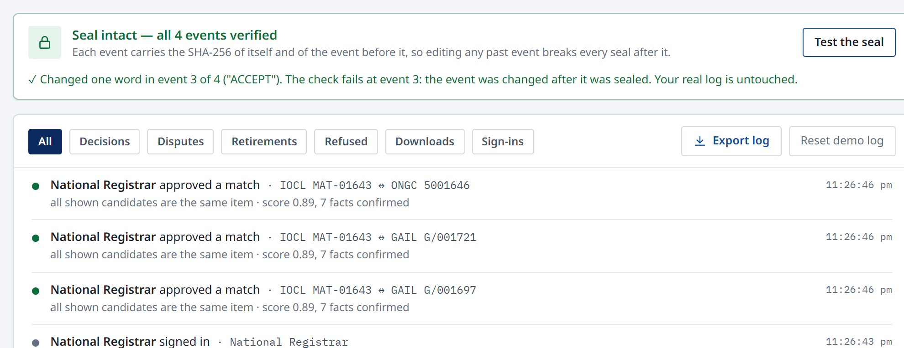
screen-audit-seal.png
screen-block-whatif.png
| Question | Answer |
|---|---|
| Why not just buy SAP MDG or Informatica? | They are built for one enterprise and need all data in one place. No CPSE will hand over its prices and vendor list. Ours works federated — only bands and hashes cross — and it is an Indian registry for national procurement data. |
| Isn't this just string matching? | The opposite. Text matching scores SS316 vs SS304 at 0.989 and would merge them. We match on specifications and veto on grade — and on the same 15,000 records the text methods are 6–8% right while ours made 0 wrong merges. |
| Your data is synthetic — why believe it? | Fair — it measures how well we undo noise we generated. So we test on 252 real NTPC and Oil India lines held back while building: 0 wrong merges, item type 98%. We report both, never blended. |
| What if the AI hallucinates a grade? | The LLM only reads — it never decides a merge. The rule reader runs first and every value it takes keeps the words it came from; a record that contradicts itself is held for a person; the rules decide. Next phase: the LLM must quote its words, and a value whose quote is not in the line is dropped. |
| Who approves a merge between two companies? | The national registrar links codes; any affected company can dispute at any time and the link returns to review; only the owning company can retire its own code. Every step is in a sealed audit log. |
| How does it scale to millions? | One LLM call per record, stored; pairwise scoring is arithmetic. Blocking skips 99.8% of pairs. At national scale: PostgreSQL + pgvector. |
| Is 150# the same as 150 psi? | No — 150# is an ASME B16.5 pressure class; a Class 150 carbon-steel flange is rated around 285 psig at ambient and less when hot. That is why pressure class is a veto field. |
| What is your weakest number? | Review precision: about one in five pairs sent to a reviewer is a true duplicate, because a short line fits several items. So the reviewer sees one record with its three best candidates — the right one is there about four times in five. |
| Will CPSEs actually change their codes? | They don't have to. The national code sits above their codes and links them; every original code stays in use. Phase 1 cleans duplicates inside one company with no data sharing at all. |
| Seconds | Show | Say |
|---|---|---|
| 0–15 | Real Tender Text page: 101.60 mm vs 4″ | “This is a real government tender. Only the weight proves these are one pipe.” |
| 15–30 | Case: The Match — SKF vs FAG 6205 | “Few shared words. The standard says they are the same bearing.” |
| 30–45 | Case: The Block — SS316 vs SS304 | “Near-identical text. Grade is a veto.” |
| 45–60 | The what-if line | “If the grade matched, this would score 0.956. One field decided.” |
| 60–75 | Creation gate — the contradicting 6205 | “It contradicts itself. Caught before it can match anything.” |
| 75–90 | Audit trail — Test the seal | “Change one word and the seal breaks. Every decision can be replayed.” |
Prepared 25 September 2026 for Team Overwatch. Numbers: tag ppt-numbers-2026-09-25. No live model call in the demo — everything is pre-computed.